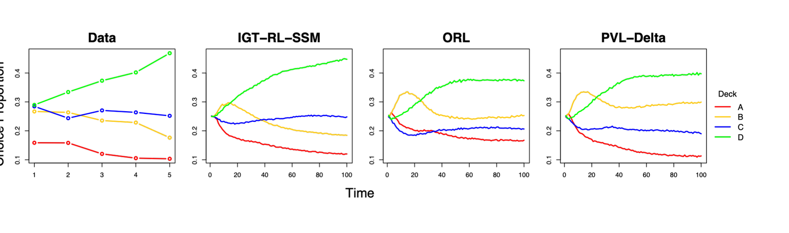
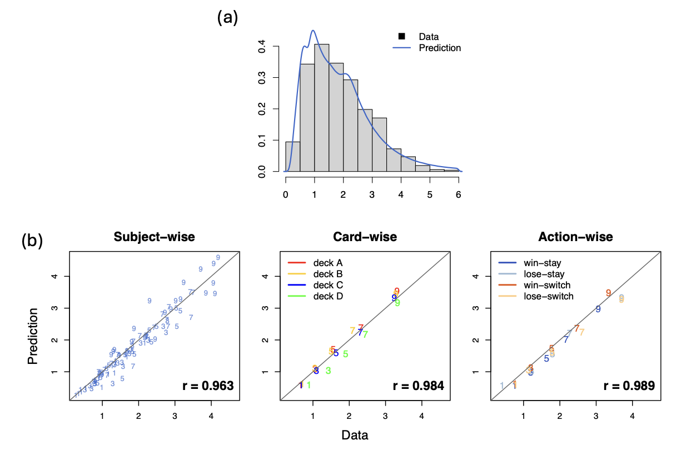
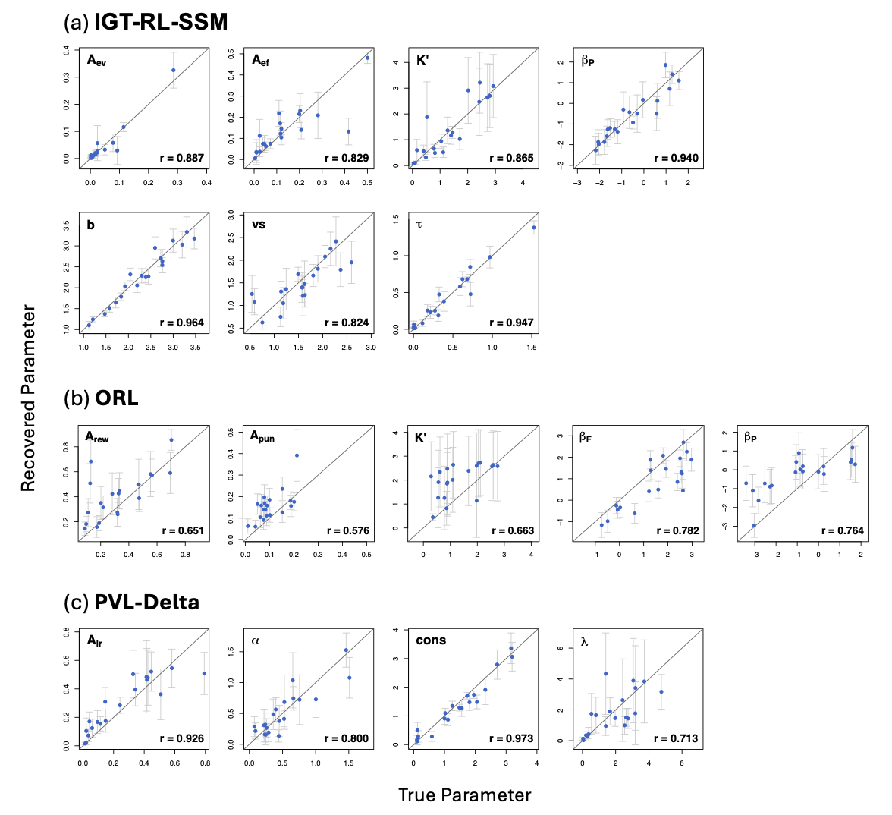

Background
Behavioral addiction is marked by persistent pursuit of immediate reward despite mounting long-term cost — a breakdown in value-based decision-making. The Iowa Gambling Task (IGT; Bechara et al., 1994) is the standard laboratory assay, and a family of reinforcement learning models has grown up around it to explain performance in mechanistic terms: PVL-Delta (Ahn et al., 2008), VPP (Worthy et al., 2013), the Outcome-Representation Learning model (ORL; Haines et al., 2018), and VSE (Ligneul et al., 2019).
Two problems motivated this project.
Gap 1 — parameter recovery has been under-scrutinized
These models are used to make claims about individuals: that a particular patient learns slowly from punishment, or perseverates. Such claims are only licensed if the model can retrieve known parameter values from data it generated itself. Yet PVL-Delta and VPP were introduced with no recovery analysis at all; ORL reported recovery only as a distribution of correlations, with two parameters recovering poorly and the interpretive consequences left undiscussed; and VSE showed regression lines without per-individual scatter, so individual-level recoverability could not be judged.
Gap 2 — choice-only models discard response time
Many cognitive models fit the same choice patterns equally well, so choice alone cannot discriminate between competing theoretical accounts. It also under-constrains estimation. ORL is the worked example: its three components — expected value, expected frequency, and perseveration — can offset one another, so choices alone cannot say which mechanism produced a given deck preference. That trade-off is a direct cause of its poor recovery. Response time is cheap to collect, continuous and right-skewed, and carries information of a qualitatively different kind; joint choice–RT modeling is well established elsewhere in mathematical psychology and psychometrics.
Methods

V_j = ev + ef + βP·ps;
those values scale the drift rates of four racing diffusion accumulators; the first to reach
threshold b produces the choice, and the response time is that decision time
plus non-decision time τ.Task and data
- Task Computerized IGT, 100 trials, four decks. Decks A and B give large immediate gains but net −250 USD per 10 trials; C and D give smaller gains and net +250. Loss frequency is crossed with magnitude, so frequent- and infrequent-loss decks exist on both sides.
- Sample 20 older adults (19 female; ages 67–87, mean 77), recruited through local senior centers as part of a larger project on late-life social isolation and addiction vulnerability. K-MMSE < 24 was exclusionary.
- Response time definition Behavioral data were collected inside a concurrent fNIRS study requiring a fixed 6-second trial, so RT is defined as the interval from the previous trial's feedback onset to the current card selection — the time to update value representations and select. Non-responses (~0.6% of trials) were excluded; because no feedback followed them, no learning occurred, so exclusion is model-consistent.
- Representativeness Choice trajectories were compared against the ten healthy-adult IGT datasets compiled by Steingroever et al. (2015) and found broadly consistent.
Reinforcement learning component
The learning model is built on ORL, whose deck utility is the sum of expected value, expected frequency, and perseveration. The key modification is in how the learning rates are split. Where ORL separates rates by outcome valence (one for rewards, one for punishments), this model separates them by the kind of information being updated — one rate for expected value, one for expected frequency — with each component updating independently on every trial.
- Expected value — delta rule
ev_j(t+1) = ev_j(t) + A_ev · [x(t) − ev_j(t)], withA_ev ∈ (0,1)governing sensitivity to prediction error. - Expected frequency — sign-based learning Motivated by
the robust win-frequency effect. The chosen deck updates toward
sgn(x(t)); every unchosen deck updates toward−sgn(x(t))/3, so the model encodes relative win frequency across alternatives rather than treating decks in isolation. - Perseveration Decays geometrically with
K = 3^(K′) − 1,K′ ∈ (0,5), following the reparameterization Haines et al. (2018) found optimal. - Integration
V_j = ev_j + ef_j + βP·ps_j, withβPestimated unconstrained so that its sign distinguishes perseveration from alternation rather than assuming one of them.
Sequential sampling component and the linking function
The evidence-accumulation stage is a Racing Diffusion Model — one independent diffusion accumulator per deck, all racing in parallel, with the first to reach threshold determining the choice and its first-passage time giving the decision time. A racing architecture was chosen over the binary diffusion decision model precisely because it extends directly to the four-alternative structure of the IGT while remaining compatible with trial-by-trial value updating.
- Estimated SSM parameters threshold
b(response caution), non-decision timeτ(encoding plus motor execution), and drift scalingv_s(which maps the learned-value scale onto the drift-rate scale). - Linking function
v_j(t) = v_s · [V_j(t) − V_k(t)], whereV_kis the minimum subjective value on that trial, guaranteeing non-negative drift rates. Higher learned value means faster accumulation, hence both a higher choice probability and a shorter RT. This replaces the conventional softmax rule with a time-resolved process. - Alternatives tested and rejected A nonlinear linking function, a decaying decision boundary, and perseveration expressed as a boundary adjustment were all implemented; none improved recovery or fit, so the simpler linear link was retained.
Estimation
- Framework Bayesian, seven parameters estimated per participant
— four reinforcement learning (
A_ev,A_ef,K′,βP) and three sequential sampling (b,τ_rel,v_s). - Likelihood The joint density of choice and response time was derived and implemented directly, rather than fitting choice and RT separately.
- Sampler Hamiltonian Monte Carlo (NUTS) in Stan; three chains × 2,000 iterations with 1,000 warm-up, giving 3,000 post-warm-up draws, no thinning.
- Reparameterization Non-decision time is estimated as a relative
quantity
τ_rel ∈ (0,1)and transformed asτ = min(RT) × τ_rel, which enforces the constraint0 < τ < min(RT)automatically instead of by rejection. - Priors Weakly informative: uniform on the bounded learning and
decay parameters,
Normal(0,1)onβP,Normal(2,1)onb,Normal(0.5,1)onv_s. - Convergence Gelman–Rubin
R̂ < 1.1for every parameter of every participant, with trace-plot inspection.
Validation design
The paper deliberately does not rest its case on an information criterion. Model comparison by WAIC, LOO, DIC or BIC tells you which model wins a relative contest; it does not tell you whether any of them describes the data or whether their parameters mean anything. The validation is therefore built on two things that do.
- Posterior predictive checking — absolute fit Parameter sets drawn from across the entire posterior are used to re-run the whole experiment generatively: the simulated participant starts with initial values, chooses, receives feedback from the real payoff scheme, updates, and iterates through all 100 trials. Three criteria are checked — card-wise choice trajectories, win-stay/lose-shift transitions, and RT distributions at the .1/.3/.5/.7/.9 quantiles, evaluated subject-wise, card-wise, and action-wise.
- Parameter recovery Individual posterior means from the empirical fit were used as true generating values, so the synthetic data sit in a psychologically plausible region of parameter space; 20 synthetic participants × 100 trials were simulated and the model refit with an identical procedure. Recovery is reported as per-individual scatter against the identity line with ±1 SD posterior error bars — the reporting practice whose absence was criticized in prior work — and summarized by Spearman rank correlation, which indexes whether the model preserves the ordering of people on each parameter.
- Benchmarks ORL and PVL-Delta were fit to the same data and put through the same posterior predictive checks and the same recovery pipeline.
Results



Three findings follow. The joint model is the only one of the three that reproduces the empirical ordering of deck preferences. It accounts for the full response time distribution, which the benchmarks cannot address at all. And its worst-recovering parameter still beats the worst-recovering parameter of published joint choice–RT models in the literature (r = .78 and .74 in Miletić et al., 2021; a lowest r = .78 across eight parameters in McDougle & Collins, 2021). Taken together, the model matches or beats choice-only benchmarks on their own ground, adds a channel they cannot explain, and returns person-level estimates reliable enough to carry individual-difference claims.
Limitations and next steps
- Empirical validation rests on a small, demographically narrow sample of 20 older adults; larger, more diverse, and clinical cohorts are the obvious next test.
- The value-to-drift link is linear. Nonlinear links have been proposed to address choice-accuracy misfits, but the nonlinear variant tested here recovered worse.
- Only the drift rate is made learning-dependent; boundary and starting-point dynamics were explored and degraded recovery.
- The concurrently collected fNIRS data open a direct path to model-based cognitive neuroscience — in particular the factor-analytic linking function used in my joint modeling project, which would tie value updating, response caution, and non-decision processes to specific neural signals.